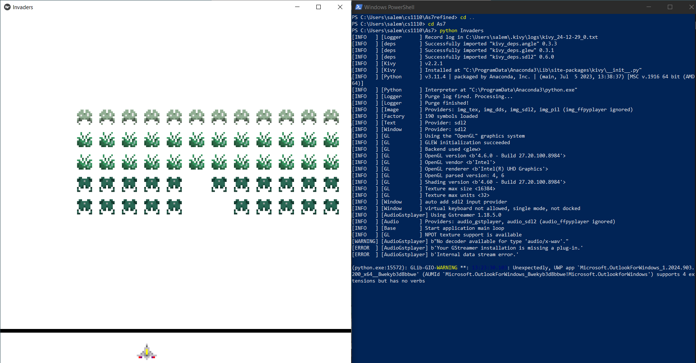
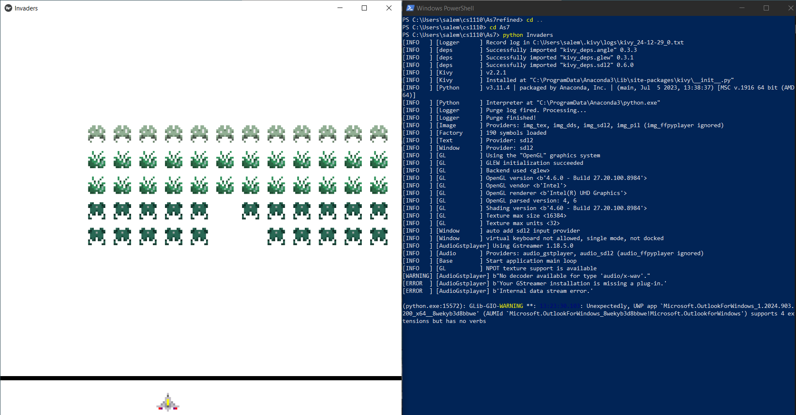

Hope you find these interesting
Here you'll find projects I've coded in python! Most if not all edited using Pulsar!
Here you will see most of the projects I've worked on, involving various languages,
ranging from python, to even OCaml. Some of these projects were actually assignments from the CS courses I had taken, therefore I can only share so much...
Regardless, remember to click on images to see them fully, so scroll down to see further.
Here you'll find projects I've coded in python! Most if not all edited using Pulsar!
 


Here you'll find projects I've coded in java! I used JetBrains Intellij to complie and test my code!


Here you'll find various projects! These projects use various languages, from OCaml to even Unity (really an engine but...)!
Explore my projects, contributions, and repositories. Click below to visit my GitHub profile.